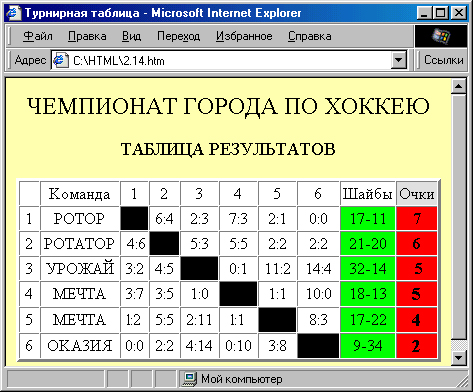
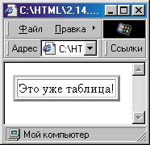
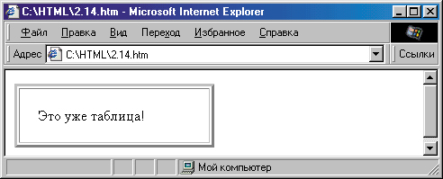
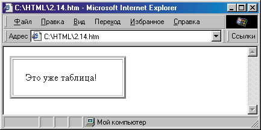
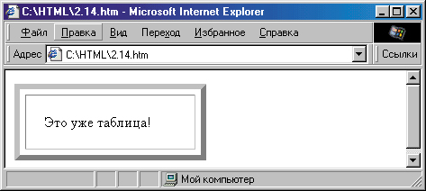
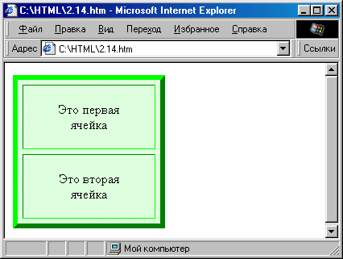
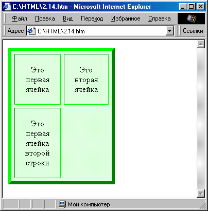
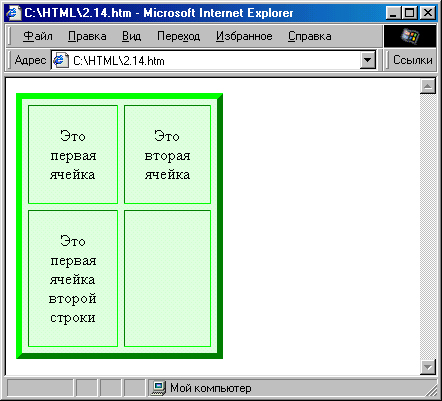
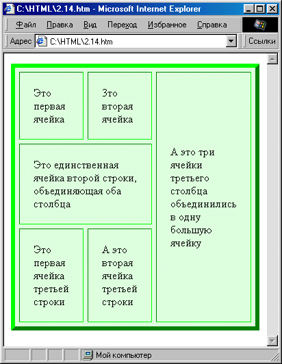
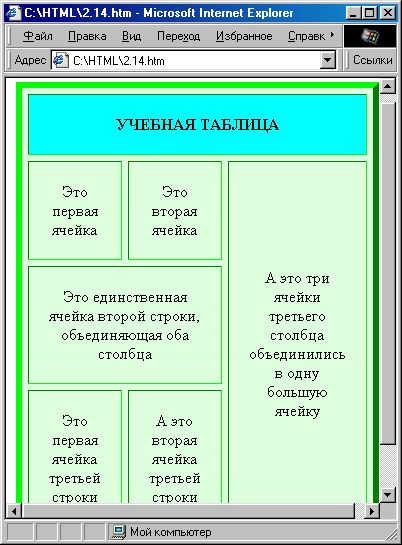

|
|
|
2.4. Создание таблиц
Для того чтобы двигаться дальше, давайте рассмотрим такой пример. Допустим, мы хотим поместить на свою страничку таблицу результатов хоккейного турнира. Поскольку для хорошего восприятия вид у таблицы должен быть стандартный, придумывать здесь особенно нечего — надо только правильно расположить имеющийся материал. Это вполне можно сделать стандартными средствами HTML. В результате может получиться вполне симпатичная табличка, как на рис. 2.1 2.

Рис. 2.1 2 . Таблица, созданная простейшими средствами HTML
Как же сделана эта таблица? Для того чтобы это понять, давайте рассмотрим сначала соответствующие средства HTML.
Формирование структуры таблицы
Любая таблица определяется в HTML с помощью тега <TABLE> . Все, что расположено между тегами <TABLE> и </TABLE> , считается таблицей. Однако не спешите! Если вы напишете что-нибудь вроде
<TABLE>
Это уже таблица?
</TABLE>
то, скорее всего, результат вас разочарует: броузер отобразит просто обычный текст. Дело в том, что мало создать таблицу, надо в ней еще создать хотя бы одну строку, а в строке хотя бы одну ячейку. Строки таблицы создаются с помощью тега <TR> и его закрывающего тега, а ячейки — с помощью тега <TD> и его закрывающего тега.
Однако, написав
<TABLE>
<TR>
<TD> Это уже таблица?
</TD>
</TR>
</TABLE>
мы получим тот же результат, что и раньше (по крайней мере, в большинстве броузеров). В чем же дело? А дело в том, что по умолчанию таблицы обычно отображаются без рамки. Если мы хотим, чтобы наша таблица из одной ячейки имела рамку, мы должны явно задать ее ширину, установив атрибут BORDER=, например, вот так:
<TABLE BORDER="3"> <TR>
<TD> Это уже таблица! </TD> </TR> </TABLE>
Вот теперь это уже на что-то похоже (рис. 2.1 3 ). Кстати, довольно интересно рассмотреть рамку, установив что-нибудь вроде BORDER="30".
Основные атрибуты таблицы
Как видите, наша таблица получилась ровно такой ширины, какая нуж- ная, чтобы вместить написанную нами фразу, и ни на пиксел больше. С помощью атрибута WIDTH= можно устанавливать любую желаемую ширину
таблицы. Например, если мы напишем <TABLE WIDTH="50" BORDER="3">,

Рис. 2.1 3 . Таблица из одной ячейки
то броузер отобразит таблицу шириной в 50 пикселов. При этом во фразе Это уже таблица! последнее слово, скорее всего, не поместится в длину таблицы и автоматически перенесется на другую строку. А если установить
WIDTH-50%, то таблица растянется на половину ширины окна броузеоа (рис. 2.1 4).

Рис. 2.1 4 . Установка ширины таблицы
А что делать, чтобы текст не “прилеплялся” так сильно к границе ячейки как показано на рис. 2.14 и 2.15? Для этого тоже существует специальный атрибут — CELLPADDING=. Его значение определяет, на сколько точек текст будет отступать от края ячейки. Для лучшей иллюстрации этого атрибута выберем в качестве его значения какое-нибудь большое число например,20:
<TABLE WIDTH="50%" BORDER="3" CELLPADDING="20"> <TR>
<TD> Это уже таблица! </TD> </TR>
</TABLE>
Результат показан на рис. 2.1 5 . Разумеется, в обычных ситуациях величину CELLPADDING= устанавливают приблизительно равной 3-5 точек, чтобы просто немного отступить от края ячейки.

Рис. 2.1 5. Применение атрибута CELLPADDING=
Кроме того, имеется еще атрибут CELLSPACING=, который задает расстояние между ячейками таблицы. В данном случае мы можем увидеть действие этого атрибута по изменению расстояния между границами нашей единственной ячейки и рамкой таблицы. Для красоты сделаем при этом толщину табличной рамки чуть побольше:
<TABLE WIDTH="50%" BORDER="6" CELLSPACING="6" CELLPADDING="20"> <TR>
<TD> Это уже таблица! </TD> </TR> </TABLE>
Результат представлен на рис. 2.1 6.

Рис. 2.1 6 . Применение атрибута CELLSPACING=
Кстати, рамка таблицы совершенно не обязана быть серой, по крайней мере в броузере Internet Explorer (версии 3 и выше). Для этого служит атрибут BORDERCOLOR=, которому можно дать в качестве значения любой доступный цвет. Однако, если вставить в наш пример что-нибудь вроде BORDERCOLOR="green" и сравнить результат с предыдущим, то он, скорее всего, вам не понравится: в предыдущем случае табличная рамка слева и сверху выводилась более светлым оттенком, чем снизу и справа, за счет чего возникало впечатление “выпуклости”. А теперь вся рамка стала одноцветной — зеленой — и смотрится гораздо “скучнее”. То же справедливо и для рамки ячейки (которая была, наоборот, “вогнутой”).
Поэтому вместо одного атрибута BORDERCOLOR= мы рекомендуем употреблять два: BORDERCOLORLIGHT= и BORDERCOLORDARK=, задающие цвет, соответственно, светлой и темной сторон рамки. Правда, эти атрибуты поддерживаются только броузером Internet Explorer.
<TABLE WIDTH="50%" BORDER=="6" CELLSPACING="6" CELLPADDING="20" BORDERCOLORLIGHT="lime" BORDERCOLORDARK="green">
<TR>
<TD> Это уже таблица! </TD>
</TR>
</TABLE>
Результат показан на рис. 2.17. Кстати, при просмотре на экране компьютера обратите внимание на то, что lime и green — в принципе подходящее, но не самое лучшее сочетание значений данных атрибутов. Для придания естественности табличной рамке полезно немного поэкспериментировать с оттенками цветов.
Рис. 2.1 7 . Окрашивание рамки таблицы
Цвет фона таблицы можно задать с помощью атрибута BGCOLOR=. Он может отличаться от цвета общего фона всей страницы, определенного атрибутом BGCOLOR= тега <BODY>.
Чтобы выровнять таблицу по центру или правому краю, можно установить в теге <TABLE> атрибут ALIGN=. Все это мы сейчас проиллюстрируем, а заодно.давайте добавим еще одну ячейку в нашу таблицу:
<TABLE WIDTH="50%" BORDER="6" CELLSPACING="6" CELLPADDING="20" ALIGN="center" BORDERCOLORLIGHT="Lime" BORDERCOLORDARK="Green" BGCOLOR="#DFFFDF">
<TR>
<ТD>Это первая ячейка</ТD>
<ТD>Это вторая ячейка</ТD> </TR>
</TABLE>
Результат представлен на рис. 2.1 8 . Как видите, расстояние между ячейками сохраняется равным значению атрибута CELLSPACING= теперь это заметно особенно хорошо.

Рис. 2.1 8 . Таблица из двух ячеек Теперь добавим в нашу таблицу вторую строку:
<TABLE WIDTH="50%" BORDER="6" CELLSPACING="6" CELLPADDING="20" ALIGN=="center" BORDERCOLORLIGHT="Lime" BORDERCOLORDARK="Green" BGCOLOR="#DFFFDF">
<TR>
<ТD>Это первая ячейка</ТD>
<TD>Это вторая ячейка</ТD> </TR>
<TR>
<ТD>Это первая ячейка второй строки</ТD>
</TR>
</TABLE>
Поскольку во второй строке всего одна ячейка (см. рис. 2. 19 ), на месте отсутствующей второй ячейки второй строки осталось пустое пространство.
Иногда это бывает полезно, но чаще требуется оставить пустую рамку незаполненной ячейки. Как это сделать? Если мы просто добавим в таблицу пару тегов <TD> </TD>, то, как ни странно, ничего не изменится — вокруг пустой ячейки рамка не отображается! Добавление пробела между тегами ячейки также ничего не дает, поскольку в HTML лишние пробелы игнорируются...

Рис. 2. 19 . Пример таблицы с “недостающей” ячейкой

Рис. 2.2 0 . Пример таблицы с пустой ячейкой
До сих пор мы рассматривали только атрибуты тега <TABLE> . Однако теги <TR> и <TD> тоже могут иметь собственные атрибуты, такие, как BGCOLOR=, BORDERCOLOR=, BORDERCOLORLIGHT=, BORDERCOLORDARK= и ALIGN=. Их значения распространяются только на одну строку или ячейку таблицы. Кроме того, имеется атрибут VALIGN=, с помощью которого можно управлять вертикальным выравниванием текста строки или ячейки. Этот атрибут может принимать значения top (выровнять по верхнему краю), middle (по середине) и bottom (по нижнему краю). Кроме того, в некоторых броузерах, например Opera, поддерживается также атрибут NOWRAP, запрещающий перенос текста ячейки на следующую строку.
Управление шириной столбцов
Если вы посмотрите на рис. 2.2 0 , то увидите, что ширина столбцов в нашей таблице разная. Это происходит потому, что броузер распределяет место в таблице в зависимости от количества текста, которого в первом столбце оказалось больше. Однако, если в теге первой ячейки указать <TD WIDTH="50%"> , то оба столбца станут равными по ширине. Таким образом, можно пользоваться атрибутом WIDTH= в теге <TD> так же, как и в теге <TABLE> , определяя ширину каждой ячейки либо в пикселах, либо в процентах от общей ширины окна броузера. Правда, строго говоря, нельзя задать ширину каждой ячейки, а лишь ширину каждого столбца, поскольку в большинстве броузеров все ячейки в столбце всегда имеют одинаковую ширину.
Более того, надо иметь в виду, что большинство броузеров могут произвольно отходить от заданных нами значений ширины ячеек, если сочтут нужным. Так что никогда нельзя полностью полагаться на атрибут WIDTH=. А если совершенно необходимо точно задать ширину какой-либо ячейки, следует пользоваться более изощренными средствами. Например, для задания минимальной ширины можно поместить в ячейку таблицы прозрачный рисунок соответствующего размера. О том, как это делается.
Объединение ячеек
Иногда в таблицах встречаются так называемые объединенные ячейки — когда несколько расположенных рядом ячеек сливаются в одну большую. Это можно сделать, установив атрибуты COLSPAN= (для объединения соседних столбцов) или ROWSPAN= (для объединения соседних строк):
<TABLE WIDTH="50%" BORDER="6" CELLSPACING="6" CELLPADDING="20" ALIGN="center" BORDERCOLORLIGHT="Lime" BORDERCOLORDARK="Green" BGCOLOR="#DFFFDF">
<TR>
<TD WIDTH="33%">Этo первая ячейка</ТD>
<TD WIDTH="33%">Это вторая ячейка</ТD>
<TD ROWSPAN="3">A это три ячейки третьего столбца объединились в одну большую ячейку</ТD>
</TR> <TR>
<TD COLSPAN="2">Это единственная ячейка второй строки, объединяющая оба столбца</ТD>
</TR>
<TR>
<TD>3ro первая ячейка третьей строки</ТD>
<TD>A это вторая ячейка третьей строки</ТD> </TR>
</TABLE>
Результат показан на рис. 2.21. Здесь, как видите, отображена таблица из трех строк по три ячейки. Однако третья ячейка первой строки с помощью атрибута ROWSPAN="3" объединена с остальными двумя ячейками третьего столбца. Поэтому в следующих строках мы можем спокойно забыть про третий столбец — место уже занято. Поэтому в третьей строке таблицы всего две ячейки. А во второй строке происходит следующее: мы с помощью атрибута COLSPAN="2" объединяем две оставшиеся ячейки этого ряда в одну.
Кстати, обратите внимание на то, что, хотя ширина первых двух столбцов таблицы задана равной 33%, то есть примерно треть ширины таблицы приходится на каждый столбец, правый столбец на самом деле занимает явно больше места. Это произошло потому, что иначе броузеру не удалось бы уместить в ширину этого столбца длинное слово “объединились”. В результате броузер самостоятельно чуть расширил этот столбец за счет двух остальных.
Мы с вами еще не рассмотрели такие элементы таблицы, как заголовок и заключение. В HTML 4.0 можно все основное содержание таблицы обозначить тегом <TBODY> . Тогда заголовок таблицы обозначается тегом <THEAD> , а заключение — тегом <TFOOT> . Все три тега употребляются с

Рис. 2.21. Пример объединения ячеек таблицы
закрывающими тегами и могут иметь различные атрибуты, например BGCOLOR=, ALIGN=, VALIGN=.
А для ячеек заголовка таблицы вместо тега <TD> обычно используют тег <ТН> . В принципе, это одно и то же, однако в ячейках <ТН> текст по умолчанию выравнивается по центру и отображается полужирным начертанием шрифта.
Для примера добавим в нашу учебную таблицу заголовок и заключение:
<TABLE WIDTH="50%" BORDER="6" CELLSPACING="6" CELLPADDING="20" ALIGN="center" BORDERCOLORLIGHT="Lime" BORDERCOLORDARK="Green" BGCOLOR="#DFFFDF">
<THEAD BGCOLOR="Aqua">
<TR><TH COLРАN="3">УЧЕБНАЯ ТАБЛИЦА</ТН></ТR> </THEAD>
<TBODY>
<TR>
<TD WIDTH="33%"> первая ячейка</ТD>
<TD WIDTH="33%"> вторая ячейка</ТD>
<TD ROWSPAN="3">A это три ячейки третьего столбца объединились в одну большую</ТD>
</TR>
<TR>
строки
<TR COLSPAN="2">единственная ячейка второй строки, объединяющая оба столбца</ТD>
</TR>
<TR>
<ТD>Это первая ячейка третьей строки</ТD>
<TD>A это вторая ячейка третьей строки</ТD>
</TR>
</TBODY> <TFOOT BGCOLOR="Yellow">
<TR><TD COLSPAN="3" ALIGN="center"SMALL >Понравилось делать?</Small></ТD>
</ТR> ><Small>Понравилось таблицы</TFOOT>
</TABLE>

Рис. 2.22. Использование заголовка
Результат показан на рис. 2.22. Осталось добавить, что использование обсуждавшегося выше атрибута RULES= со значением "groups" подразумевает именно эти “группы”: заголовок, основное содержание и заключение таблицы, обозначенные тегами <THEAD>, <TBODY> и <TFOOT>.
Анализ примера
Теперь, вооружившись полученными знаниями, давайте вернемся к таблице, представленной на рис. 2.13 и посмотрим, как же она сделана. В качестве основного цвета таблицы здесь выбран серебристый (#Е4Е4Е4), Атрибут WIDTH="100%" растягивает ее на всю ширину окна броузера, а значение CELLSPACING="0" “прижимает” ячейки друг к другу. С помощью значения CELLPADDING="2" обеспечивается наличие небольших “полей” в каждой ячейке.
В первой строке таблицы задается ширина столбцов. Ширина первого столбца с номерами хоккейных команд задана равной 20 пикселам, а всех столбцов с результатами матчей — 40 пикселам. Ширина столбца с названиями команд задана равной 20% от ширины окна. Ширина двух последних столбцов не задана вообще — им отводится все оставшееся место.
Во многих ячейках таблицы задан атрибут ALIGN="center", без которого выравнивание текста происходило бы по левому краю. Во всех ячейках с результатами встреч задан белый фон (BGCOLOR="white"), в ячейках с количеством очков и заброшенных/пропущенных шайб для лучшего визуального выделения использован другой цвет фона. Количество очков, как главная информация в каждой строке таблицы, выделено просто полужирным и чуть увеличенным шрифтом (с помощью тегов <В> и <ВЮ>). Для лучшего “разнесения” в разные стороны количества заброшенных и пропущенных шайб между ними использовано длинное тире — это специальный символ —.
Зачерненные квадраты турнирной таблицы сделаны просто — с помощью ячеек с черным цветом фона (BGCOLOR="black")“ И, наконец, для отобра-I жения рамки вокруг пустой ячейки (левой верхней) туда был помещен неразрывный пробел ( ).
Теперь давайте посмотрим на текст этой странички целиком:
<!DOCTYPE HTML PUBLIC "-//W3C//DTD HTML 4.0 Transitional//EN"> <HTML> <HEAD>
<TITLE>TypHMpHan таблица</Тitle>
</HEAD>
<BODY BGCOLOR="#FFFFB3" TEXT="02020" LINK="400080" VLINK="#400080" ALINK="H00080">
<DIV ALIGN="center"
<Н1>ЧЕМПИОНАТ ГОРОДА ПО ХОККЕЮ</Н1>
<НЗ>ТАБЛИЦА РЕЗУЛЬТАТОВ</НЗ>
</DIV>
<TABLE ALIGN="center" BGCOLOR="#E4E4E4" WIDTH="100%" CELLSPACING="0" CELLPADDING="2" BORDER="3"> <TR>
<TD WIDTH="20" ALIGN="center"> </TD>
<TD WIDTH="20%">Koмaндa</TD>
<TD WIDTH=Э40" ALIGN=Эcenter">1</TD>
<TD WIDTH="40" ALIGN="center">2</TD>
<TD WIDTH="40" ALIGN="center">3</TD>
<TD WIDTH="40" ALIGN="center">4</TD>
<TD WIDTH="40" ALIGN="center">5</TD>
<TD WIDTH="40" ALIGN="center">6</TD>
<TD ALIGN="center">Шайбы</TD>
<TD ALIGN="center">Очки</TD> </TR>
<TR>
<TD
ALIGN="center">1</TD>
<TD>«POTOP»</TD>
<TD
BGCOLOR="black"></TD> <TD
ALIGN="center"
BGCOLOR="white">6:4</TD> <TD
ALIGN="center"
BGCOLOR="white">2:3</TD> <TD
ALIGN="center"
BGCOLOR="white">7:3</TD> <TD
ALIGN="center"
BGCOLOR="white">2:1</TD> <TD
ALIGN="center"
BGCOLOR="white">0:0</TD> <TD
ALIGN="center"
BGCOLOR="#DFFFDF">17—11</TD>
<TD ALIGN="center" BGCOLOR="#FF8484"><B><BIG>7</BIG>
</TR> <TR>
<TD ALIGN=”center”2</TD>
<TD>«POTATOP»</TD>
<TD ALIGN=”center” BGCOLOR=”white>”4:6</TD>
<TD BGCOLOR=”black”></TD>
<TD ALIGN="center" BGCOLOR="white"5: 4</TD>
<TD ALIGN="center" BGCOLOR="white">5:3</TD>
<TD ALIGN="center" BGCOLOR="white">5:5</TD>
<TD ALIGN="center" BGCOLOR="white">2:2</TD>
<TD ALIGN="center" BGCOLOR="#DFFFDF">21—20</TD>
<TD ALIGN="center" BGCOLOR="#FF8484"><B><BIG>6</BIG> </B></TD>
</TR>
<TR>
<TD ALIGN="center">3</TD>
<ТD>&lаquo;УРОЖАЙ»</ТD>
<TD ALIGN="center" BGCOLOR="white">3:2</TD>
<TD ALIGN="center" BGCOLOR="white">4:5</TD>
<TD BGCOLOR="black"></TD>
<TD ALIGN="center" BGCOLOR="white">1:1</TD>
<TD ALIGN="center" BGCOLOR="white">11:2</TD>
<TD ALIGN="center" BGCOLOR="white">14:4</TD>
<TD ALIGN="center" BGCOLOR="#DFFFDF">33—14</TD>
<TD ALIGN="center" BGCOLOR="#FF8484"><B><BIG>5</BIG> </B></TD>
</TR>
<TR>
<TD ALIGN="center">4</TD>
<TD>«МЕЧТА»</TD>
<TD ALIGN="center" BGCOLOR="white">3:7</TD>
<TD ALIGN="center" BGCOLOR=="white">3 ; 5</TD>
<TD ALIGN="center" BGCOLOR="white">l:1</TD>
<TD BGCOLOR="black"></TD>
<TD ALIGN="center" BGCOLOR="white">l:1</TD>
<TD ALIGN="center" BGCOLOR="white"> 10 : 0</TD>
<TD ALIGN="center" BGCOLOR="#DFFFDF">18—14</TD>
<TD ALIGN="center" BGCOLOR="#FF8484"><B><BIG>4</BIG> </B></TD>
</TR>
<TR>
<TD ALIGN="center">5</TD>
<TD>«МЕЧТА& raquo;</TD>
<TD ALIGN="center" BGCOLOR="white">l:2</TD>
<TD ALIGN="center" BGCOLOR="white">5:5</TD>
<TD ALIGN="center" BGCOLOR="white">2:11</TD>
<TD ALI.GN="center" BGCOLOR="white">l: 1</TD>
<TD BGCOLOR="black"></TD>
<TD ALIGN="center" BGCOLOR="white">8:3</TD>
<TD ALING="'center"BGCOLOR="#DFFFDF">17—22</TD>
<TD ALIGN="center" BGCOLOR="#FF8484"><B><BIG>4</BIG> </B></TD>
</TR>
<TR>
<TD ALIGN="center">6</TD>
<TD>«OKA3ИЯ»</TD>
<TD ALIGN="center" BGCOLOR="white">0:0</TD>
<TD ALIGN="center" BGCOLOR="white">2:2</TD>
<TD ALIGN="center" BGCOLOR="white">4:14</TD>
<TD ALIGN="center" BGCOLOR="white">0 :10</TD>
<TD ALIGN="center" BGCOLOR="white">3 : 8</TD>
<TD BGCOLOR="black"></TD>
<TD ALIGN="center" BGCOLOR="#DFFFDF">9—34</TD>
<TD ALIGN="center" BGCOLOR="#FF8484"><B><BIG>2</BIG> </B></TD>
</TR>
</TABLE>
</BODY>
</HTML>
Как видите, здесь использованы далеко не все возможности HTML-таблиц а результат, тем не менее, вполне приемлемый.
Разумеется, только что рассмотренная таблица является “статичной”: при изменении, например, одного из результатов матчей нам придется вновь вручную подсчитывать шайбы и очки. Интересно сделать таблицу, которая могла бы это делать сама. Например, изначально будучи вообще пустой, она могла бы реагировать на постепенное внесение результатов матчей.
|
|
|